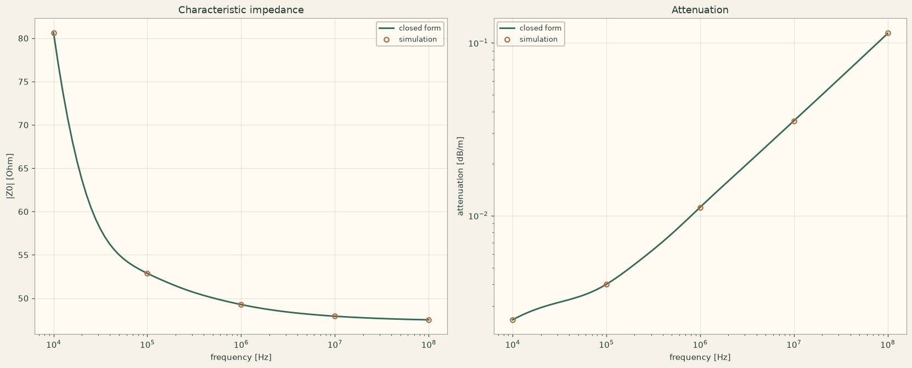
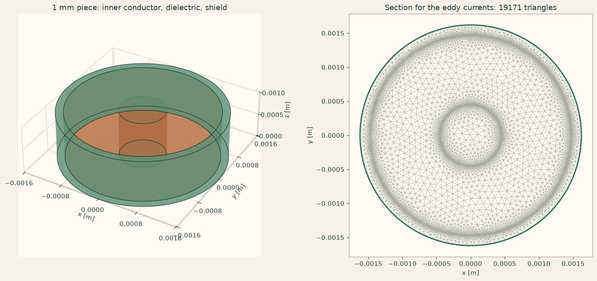

Docs › Examples › RLGC parameters, characteristic impedance and attenuation of a coaxial cable
Electrostatics, eddy currents · 2D
RLGC parameters, characteristic impedance and attenuation of a coaxial cable
A copper coaxial cable with a slightly lossy polyethylene dielectric: its four line parameters per metre, the characteristic impedance and the attenuation from 10 kHz to 100 MHz.
Run locally with OneSimulation. The example downloads are free. Running them requires an activated runtime. The current pilot runs on macOS on Apple Silicon with CPython 3.13. Installation and activation · View pilot plans. Scope of the reference checks.

What it computes
OneSimulation cuts the cross-section from STEP parts and solves it with quadratic triangles three ways: electrostatics in the dielectric for C', a steady current field with the loss conductivity of the dielectric for G', and the time-harmonic eddy-current model with inner conductor and shield as solid conductors for R' and L' with the skin effect, on triangles of 8 µm at the conductor surfaces. Z0 and the propagation constant follow from the four parameters. The script that builds the STEP files comes with the notebook.
What it checks
C' = 105.74 pF/m lies 0.002 % below 2 pi eps/ln(b/a), G' matches omega C' tan delta to four digits; R' and L' follow the Bessel solutions of wire and tubular shield to four digits up to 10 MHz and within 1.1 % and 0.01 % at 100 MHz (1.225 Ohm/m, 238.7 nH/m). |Z0| falls from 80.65 Ohm at 10 kHz to 47.51 Ohm at 100 MHz and the attenuation rises from 0.0025 to 0.115 dB/m, both on the closed forms.
Geometry
The notebook starts at the import of the CAD files coax_rlgc_frequency_sweep.step, coax_rlgc_frequency_sweep_dielectric.step, coax_rlgc_frequency_sweep_inner.step, coax_rlgc_frequency_sweep_shield.step: STEP (AP242), readable by any CAD program, with the names of the faces that the boundary conditions use. Put them next to the notebook.

The geometry script
The script coax_rlgc_frequency_sweep_geometry.py builds the geometry with the CAD objects of OneSimulation and writes the files. Change a dimension there, run it, and run the notebook again.
"""Geometry of the OneSimulation example "RLGC parameters, impedance and attenuation of a coaxial cable".
Builds a 1 mm long piece of a coaxial cable with the CAD objects of OneSimulation: an inner copper
conductor of 0.45 mm radius, a polyethylene dielectric to 1.47 mm and a copper shield to 1.62 mm.
Files: coax_rlgc_frequency_sweep.step (the whole cross-section), coax_rlgc_frequency_sweep_inner.step,
coax_rlgc_frequency_sweep_dielectric.step and coax_rlgc_frequency_sweep_shield.step. The example
computes on the cross-section z = 0.5 mm.
"""
from onesim.cad.d3 import AnnularCylinder, Cylinder
mm = 1e-3
inner, dielectric, shield, length = 0.45 * mm, 1.47 * mm, 1.62 * mm, 1.0 * mm
Cylinder(radius=shield, length=length).save("coax_rlgc_frequency_sweep.step")
Cylinder(radius=inner, length=length).save("coax_rlgc_frequency_sweep_inner.step")
AnnularCylinder(inner_radius=inner, outer_radius=dielectric, length=length).save(
"coax_rlgc_frequency_sweep_dielectric.step"
)
AnnularCylinder(inner_radius=dielectric, outer_radius=shield, length=length).save(
"coax_rlgc_frequency_sweep_shield.step"
)The notebook
The complete notebook, cell by cell. Run it to produce the figures and the comparison printout.
A transmission line is described by four parameters per metre: series resistance \(R'\) and inductance \(L'\), shunt conductance \(G'\) and capacitance \(C'\). From them follow the characteristic impedance and the propagation constant
The cable has a copper inner conductor of radius \(a=0.45\) mm, a polyethylene dielectric (\(\varepsilon_r=2.25\), loss tangent \(\tan\delta=2\cdot10^{-4}\)) to \(b=1.47\) mm and a copper shield to \(c=1.62\) mm (\(\sigma=5.8\cdot10^7\) S/m). Three 2D cross-section problems give the parameters:
- electrostatics in the dielectric, \(\nabla\cdot(\varepsilon\nabla V)=0\) with 1 V between the conductors: \(C'=Q'/U\);
- steady current in the dielectric with the loss conductivity \(\sigma_d=\omega\varepsilon\tan\delta\) in place of the permittivity: \(G'=I'/U\);
- eddy currents in the whole section, go and return current of 1 A in inner conductor and shield (solid conductors): \(R'+j\omega L'=Z'\) from the conductor voltages.
The cable comes from the CAD files coax_rlgc_frequency_sweep*.step; the script coax_rlgc_frequency_sweep_geometry.py builds them with the CAD objects of OneSimulation. The two-dimensional model is their section at half length.
Reference. \(C'=2\pi\varepsilon/\ln(b/a)\), \(G'=\omega C'\tan\delta\); the internal impedance of a round wire \(Z_i=\frac{k\,J_0(ka)}{2\pi a\sigma J_1(ka)}\) with \(k=\sqrt{-j\omega\mu_0\sigma}\), of the tubular shield with its current on the inside \(Z_s=\frac{q}{2\pi b\sigma}\,\frac{I_0(qb)K_1(qc)+K_0(qb)I_1(qc)}{I_1(qc)K_1(qb)-I_1(qb)K_1(qc)}\) with \(q=\sqrt{j\omega\mu_0\sigma}\) (Schelkunoff, Bell Syst. Tech. J. 13, 1934, 532; Ramo, Whinnery and Van Duzer, Fields and Waves in Communication Electronics, 3rd ed., 1994, §5.16), and the external inductance \(\mu_0\ln(b/a)/(2\pi)\).
import numpy as np
from onesim.cad.exchange import load
from onesim.materials import VacuumPermeability, VacuumPermittivity, regionwise
from onesim.meshing import TriangularMesher
from onesim.numerics import Numerics
from onesim.numerics.fem import FiniteElement, Lagrange
from onesim.numerics.linear import ComplexSparseDirect, SparseDirect
from onesim.physics.electrostatics import FixedPotential, PoissonEquation
from onesim.physics.magnetostatics import (
Coil,
EddyCurrents,
MagneticInsulation,
coil_impedance,
)
from onesim.simulation import Problem, Simulation
from onesim.visualization import plots, theme
from scipy.special import iv, jv, kv
theme.set()Geometry and meshes
load returns each part, section its cross-section. The dielectric annulus carries the electric problems; the whole section with inner conductor and shield as regions the eddy currents, with triangles of 8 µm at the conductor surfaces that resolve the skin depth of 6.6 µm at 100 MHz with quadratic elements.
name = "coax_rlgc_frequency_sweep"
cut = lambda part: load(f"{name}{part}.step").section((0, 0, 1), origin=(0, 0, 0.0005))
cable, inner, dielectric, shield = (
cut(""),
cut("_inner").named("inner"),
cut("_dielectric"),
cut("_shield").named("shield"),
)
a, b, c = inner.size[0] / 2, dielectric.size[0] / 2, cable.size[0] / 2
electric_mesh = TriangularMesher(target_size=(b - a) / 12, refinements=1).generate(
dielectric
)
radius = lambda p: np.hypot(p[:, 0], p[:, 1])
skin = lambda p: np.minimum(np.abs(radius(p) - a), np.abs(radius(p) - b))
magnetic_mesh = TriangularMesher(
target_size=1e-4,
embedded_regions=(inner, shield),
size_field=lambda p: np.clip(8e-6 + 0.8 * skin(p), 8e-6, 1e-4),
).generate(cable)
fig = plots.figure(1, 2, size=(14, 6))
plots.geometry(
[
load(f"{name}_{part}.step").named(label)
for part, label in (
("inner", "inner conductor"),
("dielectric", "dielectric"),
("shield", "shield"),
)
],
labels=False,
camera=plots.Camera(elevation=35, azimuth=-60),
title="1 mm piece: inner conductor, dielectric, shield",
ax=fig[0],
)
plots.mesh(
magnetic_mesh,
groups=("all",),
legend=False,
title=f"Section for the eddy currents: {magnetic_mesh.cell_count} triangles",
ax=fig[1],
)
plots.show()Capacitance and conductance
The same PoissonEquation twice: with the permittivity, and with the loss conductivity of the dielectric at each frequency in its place.
eps0, mu0, sigma, er, tan_delta = (
float(VacuumPermittivity().evaluate()),
float(VacuumPermeability().evaluate()),
5.8e7,
2.25,
2e-4,
)
frequencies = np.array([1e4, 1e5, 1e6, 1e7, 1e8])
numerics = Numerics(
spatial=FiniteElement(element=Lagrange(order=2), quadrature_order=4),
linear_solver=SparseDirect(),
)
sides = dielectric.boundaries
per_volt = {}
for label, value in [("C", er * eps0)] + [
(f, 2 * np.pi * f * er * eps0 * tan_delta) for f in frequencies
]:
model = PoissonEquation(
domain=dielectric.domain(),
permittivity=regionwise(
(), default=value, unit="F/m" if label == "C" else "S/m"
),
charge_density=0.0,
)
result = Simulation(
problem=Problem(
name=f"Cable dielectric, {label}",
geometry=dielectric,
physics=(model,),
boundary_conditions=(
FixedPotential(boundary=sides.inner_wall, physics=model, value=1.0),
FixedPotential(boundary=sides.outer_wall, physics=model, value=0.0),
),
),
mesh=electric_mesh,
numerics=numerics,
).solve_stationary()
per_volt[label] = result.field(model.potential).reaction(sides.inner_wall)
capacitance = per_volt["C"]Series impedance
EddyCurrents with the inner conductor and the shield as solid conductors carrying 1 A each way; the sum of their voltages per metre is \(R'+j\omega L'\).
series = {}
for f in frequencies:
coils = (
Coil(inner, current=1.0, conductor="massive"),
Coil(shield, current=1.0, conductor="massive", direction=-1),
)
model = EddyCurrents(
domain=cable.domain(),
permeability=VacuumPermeability(),
frequency=f,
coils=coils,
conductivity=regionwise(
{"inner": sigma, "shield": sigma}, default=0.0, unit="S/m"
),
)
result = Simulation(
problem=Problem(
name="Cable section",
geometry=cable,
physics=(model,),
boundary_conditions=(
MagneticInsulation(boundary=cable.boundaries.all, physics=model),
),
),
mesh=magnetic_mesh,
numerics=Numerics(
spatial=FiniteElement(element=Lagrange(order=2), quadrature_order=4),
linear_solver=ComplexSparseDirect(),
),
).solve_stationary()
series[f] = sum(coil_impedance(result, model, coil) for coil in coils)Results
All four parameters, the characteristic impedance and the attenuation against the closed forms.
k = lambda f: np.sqrt(-1j * 2 * np.pi * f * mu0 * sigma)
exact_series = lambda f: (
k(f) * jv(0, k(f) * a) / (2 * np.pi * a * sigma * jv(1, k(f) * a))
+ (
lambda q: q
/ (2 * np.pi * b * sigma)
* (iv(0, q * b) * kv(1, q * c) + kv(0, q * b) * iv(1, q * c))
/ (iv(1, q * c) * kv(1, q * b) - iv(1, q * b) * kv(1, q * c))
)(np.sqrt(1j * 2 * np.pi * f * mu0 * sigma))
+ 1j * 2 * np.pi * f * mu0 / (2 * np.pi) * np.log(b / a)
)
exact_c = 2 * np.pi * er * eps0 / np.log(b / a)
print(
f"C' = {1e12 * capacitance:.3f} pF/m, closed form {1e12 * exact_c:.3f} pF/m ({100 * (capacitance / exact_c - 1):+.3f} %)"
)
print(
"f [Hz] R' [Ohm/m] ref. L' [nH/m] ref. G' [µS/m] ref. |Z0| [Ohm] ref. alpha [dB/m] ref."
)
z0, attenuation = [], []
for f in frequencies:
omega = 2 * np.pi * f
Z, Ze, G, Ge = series[f], exact_series(f), per_volt[f], omega * exact_c * tan_delta
gamma = np.sqrt(Z * (G + 1j * omega * capacitance))
gamma_exact = np.sqrt(Ze * (Ge + 1j * omega * exact_c))
impedance = np.sqrt(Z / (G + 1j * omega * capacitance))
impedance_exact = np.sqrt(Ze / (Ge + 1j * omega * exact_c))
z0.append(abs(impedance))
attenuation.append(8.686 * gamma.real)
print(
f"{f:9.0e} {Z.real:10.4f} {Ze.real:9.4f} {1e9 * Z.imag / omega:10.2f} {1e9 * Ze.imag / omega:9.2f} {1e6 * G:10.4f} {1e6 * Ge:9.4f}"
f" {abs(impedance):10.3f} {abs(impedance_exact):8.3f} {8.686 * gamma.real:12.5f} {8.686 * gamma_exact.real:9.5f}"
)The parameters follow the closed forms over four decades: \(R'\) grows with the square root of the frequency once the skin depth is below the conductor size, \(L'\) falls to its external part, \(G'\) grows in proportion to the frequency, and \(Z_0\) approaches \(\sqrt{L'/C'}\approx 50\,\Omega\).
Figure
Characteristic impedance and attenuation over frequency against the closed forms.
f = np.logspace(4, 8, 81)
fig = plots.figure(1, 2, size=(15, 6))
plots.line(
x=f,
y={
"closed form": np.abs(
np.sqrt(exact_series(f) / (2j * np.pi * f * exact_c * (1 - 1j * tan_delta)))
)
},
points={"simulation": (frequencies, z0)},
scale="logx",
xlabel="frequency [Hz]",
ylabel="|Z0| [Ohm]",
title="Characteristic impedance",
ax=fig[0],
)
plots.line(
x=f,
y={
"closed form": 8.686
* np.real(
np.sqrt(exact_series(f) * 2j * np.pi * f * exact_c * (1 - 1j * tan_delta))
)
},
points={"simulation": (frequencies, attenuation)},
scale="loglog",
xlabel="frequency [Hz]",
ylabel="attenuation [dB/m]",
title="Attenuation",
legend="upper left",
ax=fig[1],
)
plots.show()Going further
Give the dielectric a frequency-dependent loss tangent, or replace the copper shield by a braid of lower conductivity and watch the attenuation rise.